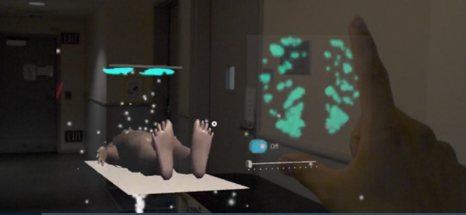
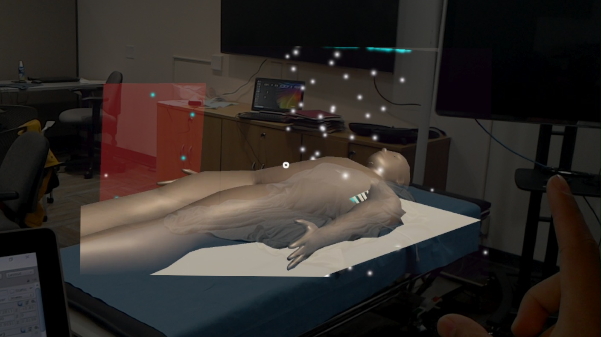
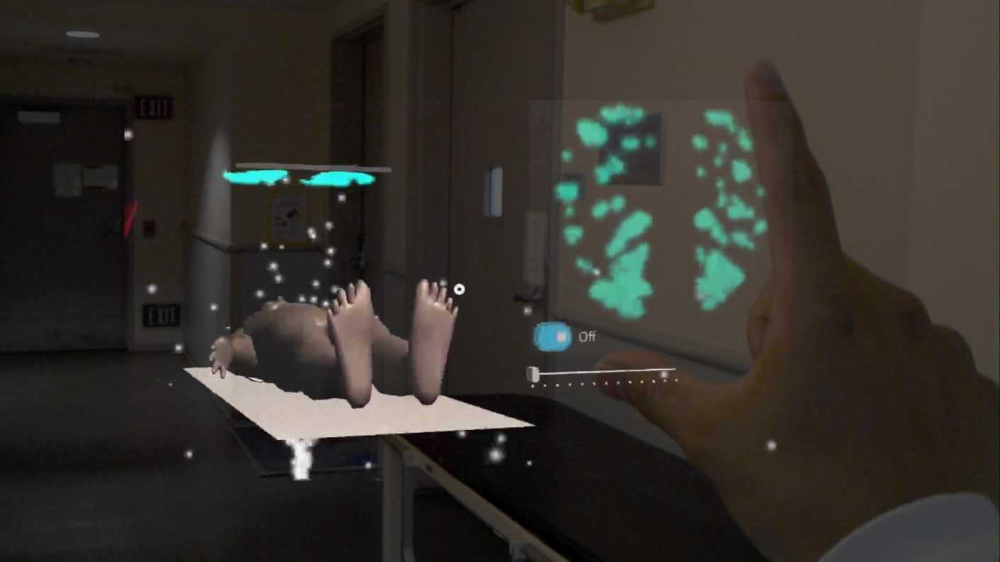
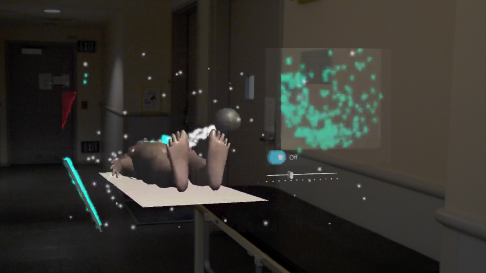
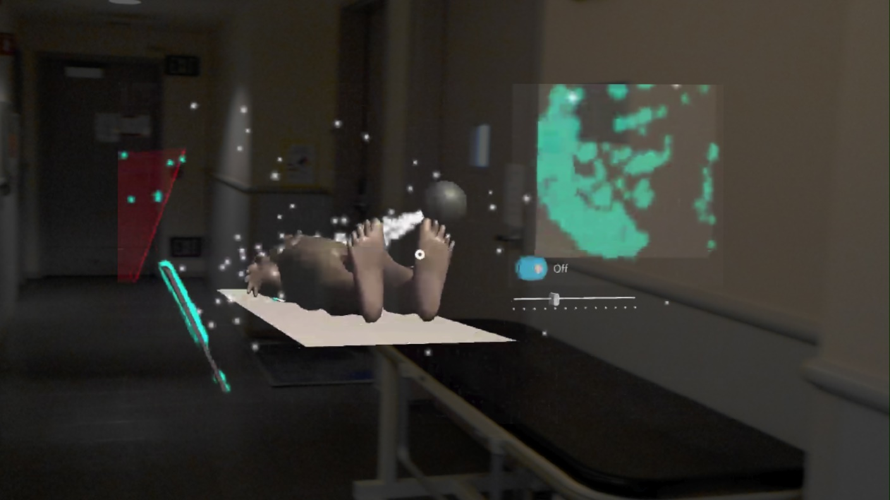
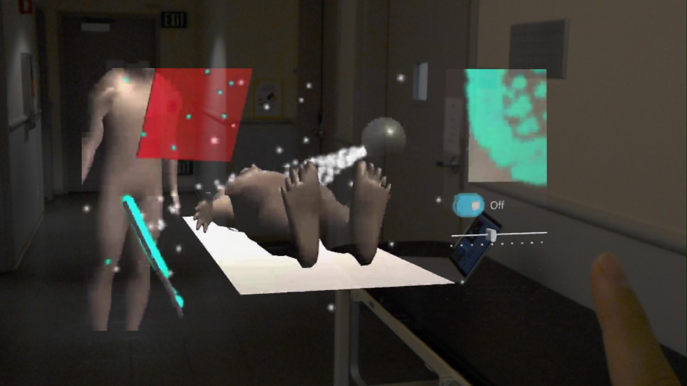
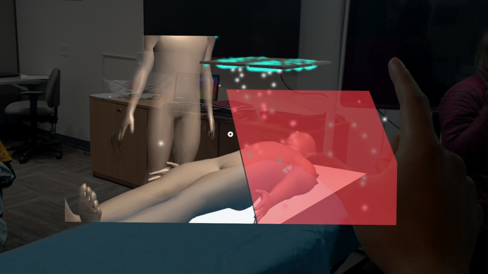

Research · IMMERS Lab, Stanford
AR X-Ray Scatter Visualizer
Augmented Reality
Microsoft HoloLens 1
C#
Radiation Safety
An augmented reality application on the Microsoft HoloLens 1 that visualizes scattered x-ray to improve education and awareness of scattered radiation in interventional suites.

- Role
- Undergraduate Research Assistant
- Lab
- Incubator for Medical Mixed Reality (IMMERS), Stanford
- Timeline
- 2019 – 2020
- Tech
- HoloLens 1, C#
Overview
My first foray into medical development was an AR solution to visualize scattered x-ray in an operating suite. It sparked my curiosity for the field and showed me I could build solutions that may transform healthcare.
Why it matters
This proof-of-concept could help minimize unnecessary x-ray dosage for operating staff and patients by making invisible scattered radiation visible.
Outcome
The project resulted in a poster presentation.
Gallery






HoloLens captures, Aug. & Nov. 2019
More work
See the rest of my projects and research.